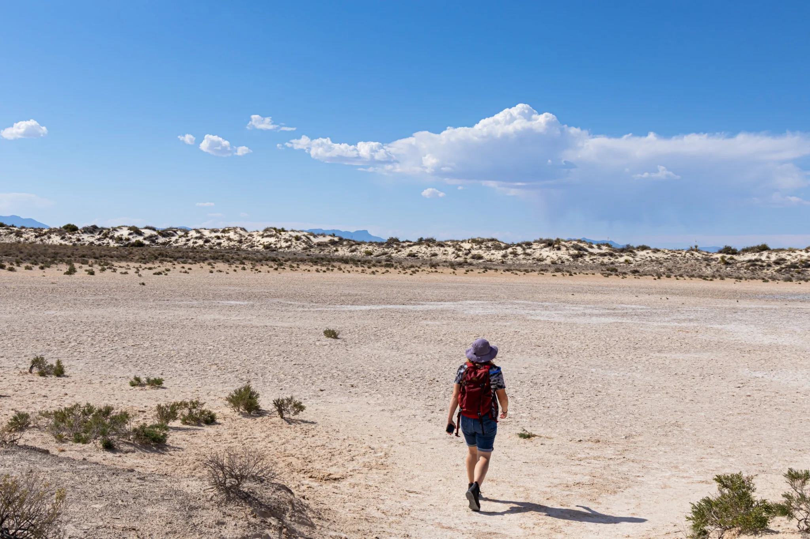
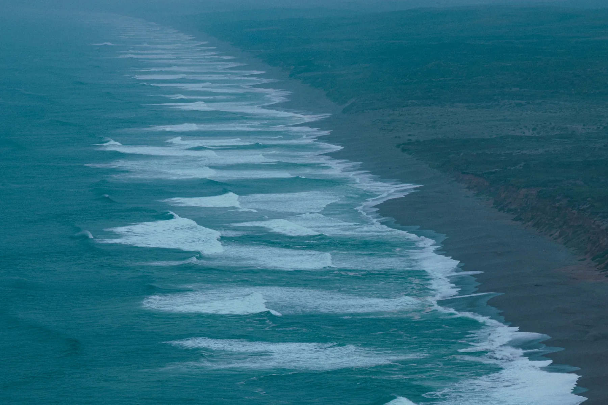
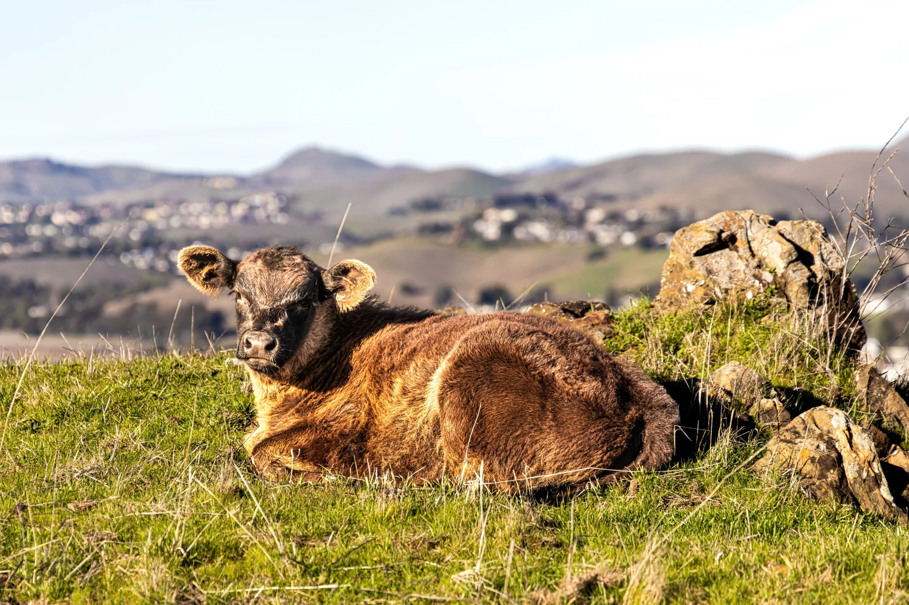
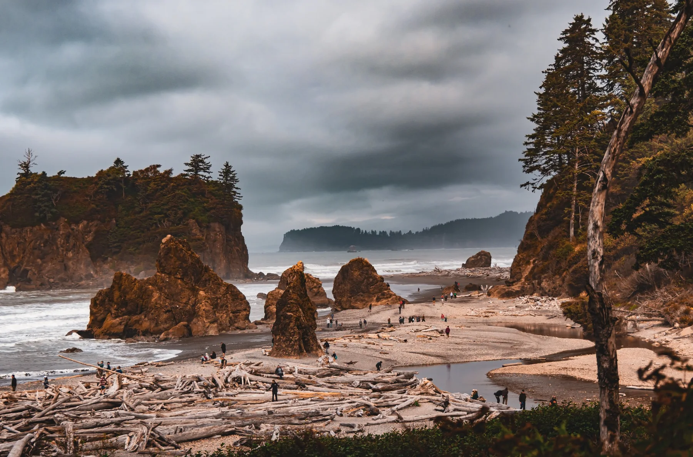
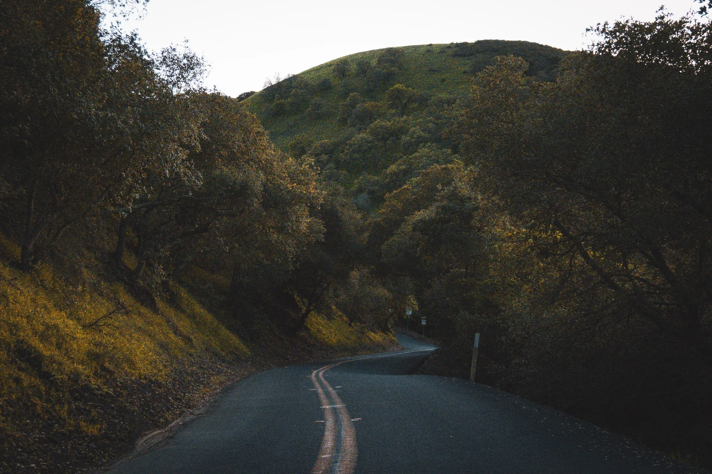
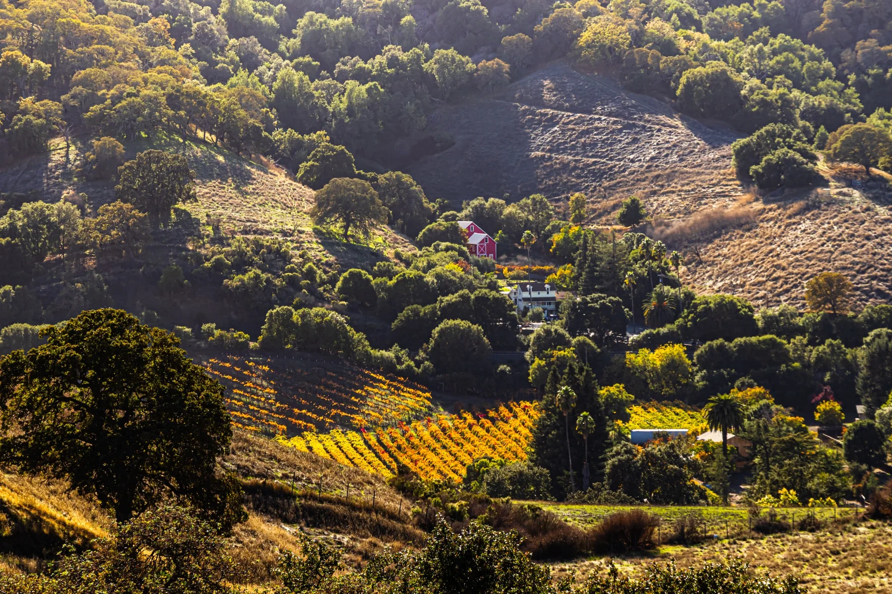
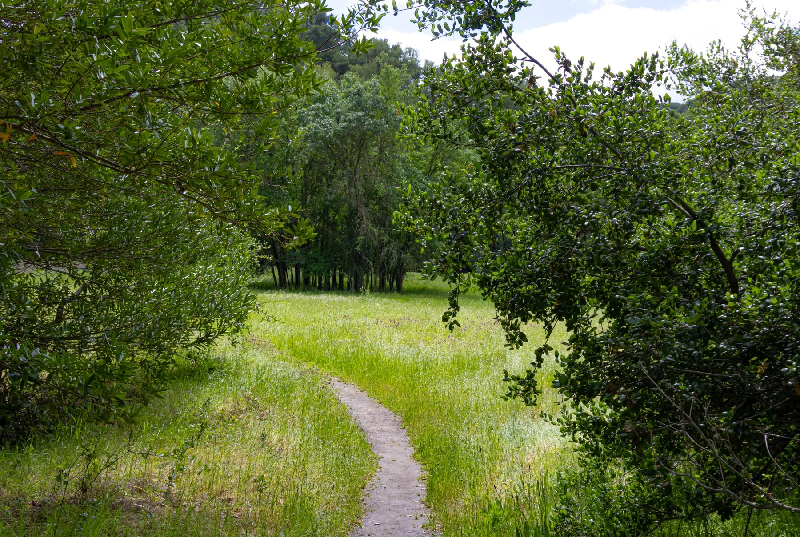

A living collection
Things I Noticed
Not a catalog of subjects. A collection of moments that asked me to stop.











A living collection
Not a catalog of subjects. A collection of moments that asked me to stop.






